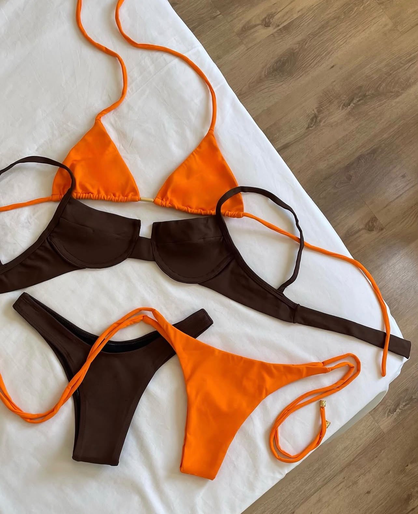
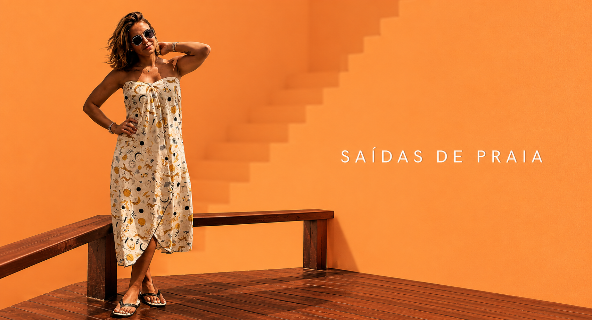
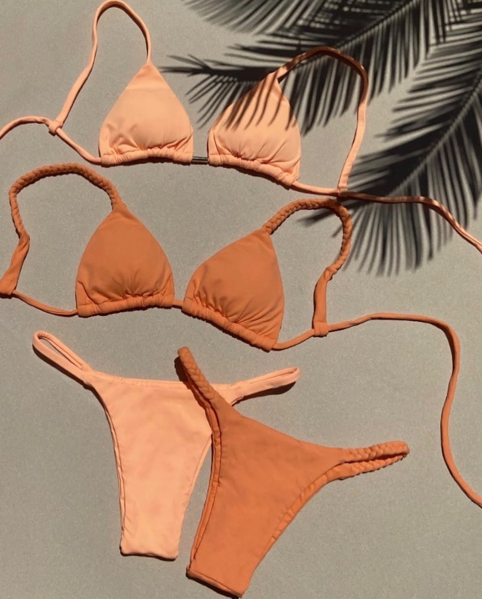
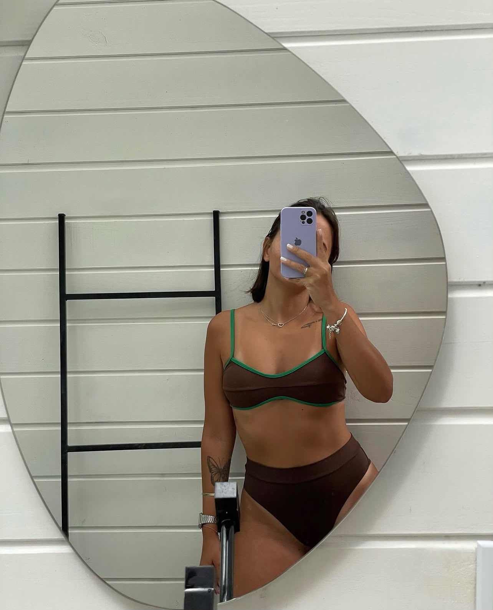
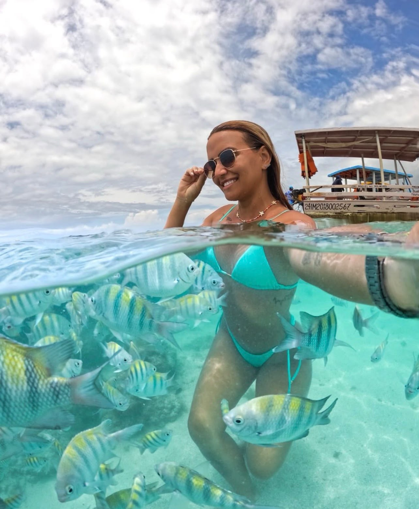
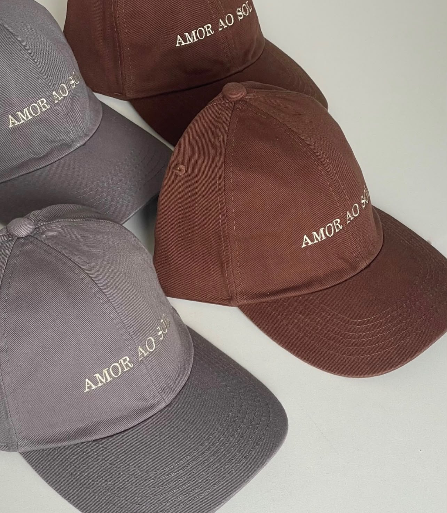
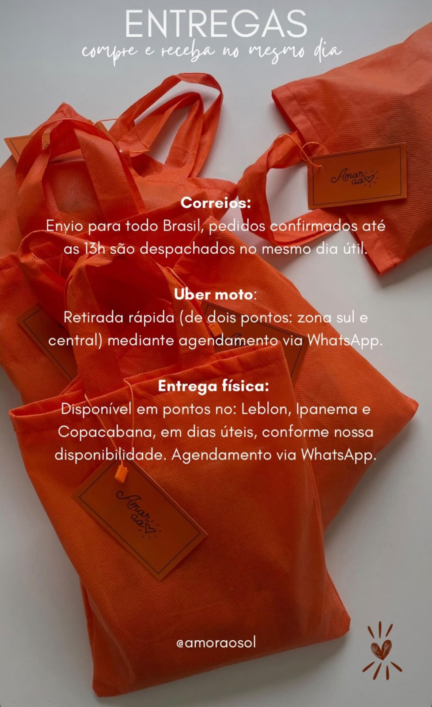

Mais vendidoDo Rio de Janeiro para todo o Brasil

Coleção · Biquínis
Produção pequena e autoral. Escolha o seu tamanho e chame no WhatsApp — a peça sai do ateliê no mesmo dia.

Mais vendido
Novidade

Não achou a sua cor? Tem mais de 160 combinações publicadas no nosso Instagram.
Ver estoque completo no @amoraosolColeção · Saídas de praia
Peças leves que secam rápido e cabem na bolsa de praia — para sair da água e continuar o dia sem parecer que veio da areia.
As saídas saem em produção pequena e cada estampa vem em poucas peças.
Ver estampas disponíveisGuia de medidas
Meça por cima da pele, com a fita justa mas sem apertar. Na dúvida entre dois tamanhos, vá no maior — nossas peças são reguláveis nas amarrações.
| Tam. | Busto | Cintura | Quadril |
|---|---|---|---|
| P | 82–87 | 62–67 | 88–93 |
| M | 88–93 | 68–73 | 94–99 |
| G | 94–99 | 74–79 | 100–105 |
| GG | 100–105 | 80–85 | 106–111 |
Medidas do corpo em centímetros — não da peça.
Manda suas medidas que a gente te diz qual serve
Acessórios
Boné de sarja com bordado da marca, para completar o look do pé na areia até o quiosque.

Bordado à mãoSarja de algodão · bordado lateral · fecho ajustável
Quem já usa
Pedi de manhã e recebi no mesmo dia em Ipanema. O caimento é outra coisa, não sobe nem com onda.
Errei o tamanho e trocaram sem drama nenhum. Atendimento pelo WhatsApp igual conversar com amiga.
Terceiro que compro. A cor não desbota mesmo depois de piscina, e chegou embaladinho num capricho.
A marca
A Amor ao Sol nasceu do jeito mais carioca possível: da vontade de ter um biquíni que servisse de verdade, que não escorregasse na primeira onda e que fosse bonito dentro e fora d'água.
Hoje cada peça continua saindo daqui do Rio, em produção pequena, escolhida fio a fio. Nada de estoque gigante e revenda — é a mesma pessoa que corta, costura, fotografa e responde o seu WhatsApp.
com amor, Amor ao Sol
Como chega até você
Envio para todo o Brasil. Pedidos confirmados até as 13h são despachados no mesmo dia útil.
Retirada rápida a partir de dois pontos — zona sul e centro — mediante agendamento pelo WhatsApp.
Pontos no Leblon, Ipanema e Copacabana, em dias úteis, conforme disponibilidade. Agendamento pelo WhatsApp.

Dúvida de tamanho, cor ou modelo? Chama no WhatsApp que a gente resolve em dois minutos — quem responde é a dona da marca.
Falar no WhatsApp agoraCostuma responder em poucos minutos · Seg a Sáb